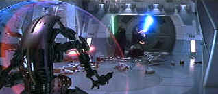
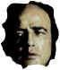

| Star Wars:Episode I- The Phantom Menace (SE) /C+,B- |
| Fox/1999/136/ANA 2.35 |
Ever the movie optimist, I approached The Phantom Menace DVD with enthusiasm, hoping my initial theatrical impressions had been colored by bad projection, rude audience, or maybe just a bad day. The film is still stiff and stilted, dialogue is recited by actors in turn without any sense of interaction. Maybe they are all digitally created. Sure, there are enjoyable elements, but it's more like short-hand moviemaking, depending upon good will built up through the earlier, far more skillful Star Wars films.
 |
| Qui-Gon and Obi battle droids. ©Fox |
Truth be told, none of the Star Wars epics were long on story, but the characters lived in
the universe created by George Lucas and company. There was a new found shared wonder about the
films. The chemistry between the characters was finely balanced. None of this is present in
The
Phantom Menace.
Stepping back in time, the prequel delves into the conflict histories depicted
in the first three films. Lucas clearly states that the Star Wars vision consists of six
films and that it's necessary to see them all to understand and appreciate the subtleties and
nuances that supposedly exist. In his mind that may be a pretty good excuse for delivering a film
virtually devoid of interest and clearly serves only to move on to the next film, but asking
audiences to wait three years or ten years for the next chapter in a six part Saturday morning
serial is too much. Newsflash Mr. Lucas: Each film has to stand on it's own.
Besides introducing the characters for future episodes,
The
Phantom Menace depicts the battle for control of Queen Amidala's Naboo. The Trade Federation,
led by Darth Sidious, initiates plans for conquering the universe with an assault on her planet and
an attempt to co-opt senate of the Galactic Republic. Jedi knights Qui-Gon Jinn and Obi-Wan Kenobi
get to exercise their light swords in a number of blandly choreographed battles. After a diplomatic
mission fails, the Jedi escape capture on Naboo and pick a Gungan friend, Jar Jar. On planet
Tatooine, the Jedi party and the fugitive Queen encounter Anakin, an indentured pre-pubescent
pod-rodder who reeks of the force. There's a boring pod race and the youngster joins the Jedi in
pursuit of preserving Naboo. Finally, the Jedi enlist the help of the Gungans to battle the droid
forces of the Trade Federation. Before the final battle is mounted the Jedi must face off against a
powerful dark knight, Darth Maul. It all plays out with staccato cutting and thin scripting.
Ewan McGregor plays the young Obi-Wan with cardboard rigidity. It's hard to
believe that even years of Force manipulation could turn this character into the sophisticated
vision of Alec Guinness in the first Star Wars effort. Liam Neeson is given little to work
with in the role of senior Jedi Qui-Gon. In the dual roles of Queen Amidala and maid-servant
Padmè, Natalie Portman expends most of her energy balancing an impossible hairdo. Maybe Jake Lloyd
will grow up to be an actor; but not on the evidence of his ability portraying Anakin Skywalker.
Reluctantly, my pick as the best character in this Star Wars adventure is Jar Jar Binks as
voiced by Ahmed Best. He certainly is the most three-dimensional.
The 2 DVD special edition delivers everything you
ever wanted to know about the making of The Phantom Menace. Audio commentary is a balance of
George Lucas, Rick McCallum and others of the creative and technical team. Disc 2 includes a
Deleted Scenes Documentary; The Beginning, a hour long documentary; multi-angle storyboard
analysis; five short featurettes exploring different aspects of production; poster gallery and
production photos; a twelve part Web documentary chronicling production; a music video; trailers;
and Star Wars: Starfighter--The Making of a Game.
The DVD presentation is a disappointment. I expected nothing short of
perfection in every department. Dialogue channel was too soft for
me at my normal reference setting. I had to raise it 3 dB for it to be comfortable. It was very
difficult to understand some of the dialogue from Lucas’s charming creatures. Maybe I am hard of
hearing. Other than that, surround information is beautifully placed. Video falls far short of
acceptable. Many scenes are soft. Cut to cut sharpness within scenes is inconsistent. Early scenes
exhibit a flatness of background almost as if the contrast ranged has been compressed. I even
thought I detected some horizontal jitter in a couple of early pans. Many shots exhibit significant
peak transition ringing creating halos around characters. Color, at least, is lovely to
look at. Beautiful depth of color without over- saturation is preserved with subtle variations.
Some of creature CGI is splendid and is transferred with marvelous realism. The textures on Jar
Jar's face provides a plethora of imagined emotions.
-

Selections from the Feature Archive include articles on Akira Kurosawa, Blonde Bimbos, Frank Darabont, Steven Culp, John Herzfeld or Vietnam: The Hollywood Pariah, and many more....
The Bitch Brigade

A line-up of lean-lipped actresses who marched through Hollywood in a high heeled goose step armed with razor sharp dialogue. Click on the image to read all about them.
-

-
The Movie Poster Archive includes extensive poster images from the films of stars like Susan Hayward, Kirk Douglas, Katharine Hepburn and many more. Our featured star is Edward G. Robinson
-


Apocalypse Now is Coppola's distorted vision of war now on DVD in gorgeous anamorphic images.
-


The National Film Preservation Foundation (NFPF) is the nonprofit organization created by the U.S. Congress to save America's film heritage.
-

Mystery writer Fred Hunter digs into classic films on DVD. Check out his insightful reviews at The Classics on DVD.
-

Comprehensive DVD review database. Easy to use interface with specific region searches.
-

DVD Easter Eggs
How do you take them? Fried or scrambled. Get the secrets here.
-

ISF Monitor Calibrations in the Tristate New York area. Lots of hardware info and frequent hardware peaks from video expert Kevin Miller. They may be judgmental, but that's the point, isn't it. Lots of DVD reviews plus news and more.